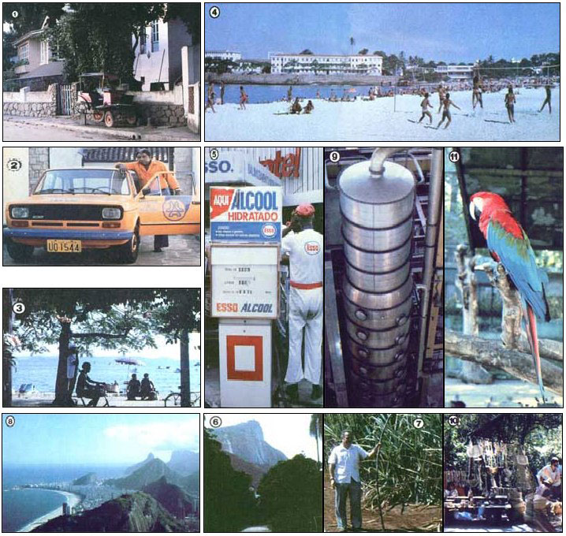

When it comes to having the potential of homegrown alcohol fuel, the old
adage-"seeing is believing"-will make special sense to all the folks who join MOTHER. ..
Since one picture is worth a good ten thousand words (more or less) we thought you might like to take a look at some of the sights in store for everyone who participates in MOTHER's Alcohol Fuel Tour of Brazil, which will take place from January 17 to 31, 1981. (The trip was originally planned to last ten days, but the vast number of things to see and do in that South American land-combined with the Cariocan "let's do it tomorrow" attitude -convinced us that it would be best to stretch out the trip to a full two weeks!)
The photos accompanying this article were all taken during a "shakedown trip" made by MOTHER's tour director, Sara Pacher, and this publication's research coordinator, Richard Freudenberger.
The pair's intent was to investigate the Brazilian program that aims to switch that country's vehicles to "liquid sunshine" by 1985 . . . and MOTHER's staffers came away impressed with the remarkable progress that has been made thus far.
All Brazilian gasoline, as an example, now contains 20% alcohol . . . thousands of cars (including government and utility fleets) have been converted to run on pure ethanol . . . especially designed alcohol-fueled cars are presently pouring off the assembly lines at Brazil's Ford, General Motors, Fiat, and Volkswagen plants . . . and Mercedes-Benz (which dominates the country's truck and bus market) has even converted some Sao Paulo diesel commuter buses to run on the renewable fuel. (See the article on page 86.)
In the course of our Brazilian tour, we'll see all those innovations and take a look at sugar cane plantations where the crops are distilled on a mass basis . . . visit the Aerospace Technical Center, where the alcohol fuel program was largely developed and scientists are now hard at work researching the best renewable source of diesel fuel . . . and talk to engineers and environmentalists -plus one of Brazil's most prominent and popular physicists-about the nation's brave new experiment in energy self-sufficiency. Of course, we'll also take some time to see the sights, shop, and soak up the tropical sun on Rio's wide, world-renowned beaches . . . which are as white as Brazilian sugar!
A few of the coming trip's fine points have yet to be worked out, so we can't-just yet-give you a firm price on this tour . . . however, we estimate the entire package will run about $2,000, including airfare. If you think you'd like to leave next winter's Ice and cold for an informative (and fun) excursion into the South American summer, let us know . . . and we'll get all the pertinent details to you as soon as possible.
While you're at it, you might want to find out whether there have been any last-minute cancellations that would allow you to join our unique Food Production Tour of the People's Republic of China (September 8-29,1980).
Or possibly you'd like to take part in our second, expanded, Solar Tour of Israel (from February 19 to March 3, 1981), which will cost $1,545including airfareand offers an optional week's visit to Egypt.
On the other hand, you might choose to participate in a new solar tour (between August 23 and September 6, 1981) that will combine a trip to the International Solar Energy Society (ISES) conference in Brighton, England with a look at some of the sophisticated ways that France (long a leader in sun technology) utilizes solar energy. This tour (including airfare) is tentatively priced at a scant $1,100 . . . and if air costs allow us to hold it at that, it will be the travel bargain of the decade!
For more information-or simply to be included on our mailing list-write to Mother's Tours, P.O. Box 70, Hendersonville, North Carolina 28791.
|
 |
|
|